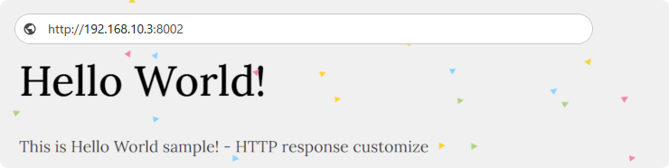

Welcome to IpServer¶
Welcome to IpServer’s documentation! “IpServer” is a simple server that supports TCP, UDP, SSL, HTTP, and HTTPS protocols for various uses such as testing, debugging, or network investigation. It features also an interactive mode and forwarding capabilities. Additionally, you can customize its behavior using Python.
Github¶
The latest version and documentation may be found on GitHub. The Github URL is the following.
https://github.com/deer-hunt/ipserver/


It’s best to refer to the help to recognize the functions.
$ ipserver --help
Installation¶
PyPI
$ pip install ipserver
or
$ pip3 install ipserver
Conda
$ conda install conda-forge::ipserver
Requirements¶
"python" and "pip" command
Python 3.6 or later version.
Features¶
Simple TCP / UDP server.
Support SSL connection. SSL server.
HTTP / HTTPS server.
IP restriction - Allow / Deny.
Interactive sending.
TCP Forwarding. Bypassing the data transmission is available.
Display received data or sent data in various format(TEXT, BINARY, BASE64, HEX…).
HTTP -> FILE: Viewing file and directory and uploading file.
HTTP -> FORWARDING: Forwarding HTTP transmission. e.g. HTTP <-> HTTPS
HTTP -> APP: Running python application. And running CGI via python.
HTTP -> INFO: Show request headers from client.
Support HTTP digest authentication.
Logging / Debug log.
Dump transmission data to file.
Configure by JSON file.
Customize by Python code. e.g. You can convert transmission data or develop original protocol server.
Running example¶
$ ipserver --mode=HTTP
Mode: HTTP
Bind: 0.0.0.0
Port: 8000
HTTP opt: FILE
Input: TEXT
Output: NONE
Output target: RECEIVE
Timeout: 30.0
Max connections: 20
Dumpfile: -
[Command help]
send: Begin input to send. Send by a Line-break. The shortcut is `s`.
bulk: Begin bulk input to send. Send by Ctrl-key. The shortcut is `b`.
"1,2,3,..": Switch the connection.
current: Show current connection.
latest: Switch latest connection.
list: List the connections.
close: Close current connection.
refresh: Refresh connections.
exit: Exit.
help: Show help.
:
[1] Accepted from 192.168.10.1:52322
[1] Closed from 192.168.10.1:52322
[2] Accepted from 192.168.10.1:52329
[2] Receive 600 bytes from 192.168.10.1:52329
[2] Send 421 bytes to 192.168.10.1:52329
[3] Accepted from 192.168.10.1:52330
Description of Mode¶
TCP Server¶
Simple server
$ ipserver --port=8002
$ ipserver --mode=TCP --bind=127.0.0.1
$ ipserver --timeout=120
$ ipserver --info
$ ipserver --debug
$ ipserver --port=8002 --log=app.log
$ ipserver --quiet
# TEST
$ telnet localhost 8000
$ telnet localhost 8002
SSL server
$ ipserver --port=8443 --mode=SSL
$ ipserver --port=8443 --mode=SSL --ssl_context=TLS1.1
$ ipserver --port=8443 --mode=SSL --ssl_keypath=/home/foo/sslkeys/
# TEST
$ openssl s_client -connect 192.168.1.100:8443
IP restriction
$ ipserver --restrict_allow=192.168.2.10
$ ipserver --restrict_allow="192.168.2.10;192.168.10.0/24"
$ ipserver --restrict_deny=192.168.10.101
$ ipserver --restrict_deny="192.168.10.101;192.168.50.0/24"
Dump file
$ ipserver --port=8002 --dumpfile=1
$ ipserver --port=8002 --dumpfile=logs
TCP Forwarding¶
# 80 Port Forwarding : HTTP
$ ipserver --forwarding=wikipedia.org --port=8001 # port: 80
$ ipserver --mode=SSL --forwarding=tcp://wikipedia.org:80 --port=8443
$ ipserver --forwarding=tcp://wikipedia.org:80 --timeout=-1
# 443 Port Forwarding : HTTPS
$ ipserver --forwarding=ssl://wikipedia.org:443 # Listen: 8000 port
$ ipserver --forwarding=wikipedia.org:443 --port=8443 --dumpfile=1
# 22 Port Forwarding : SSH
$ ipserver --forwarding=tcp://your-host:22 --timeout=-1 --port=8022
# 3306 Port Forwarding : MySQL
$ ipserver --forwarding=tcp://your-db-host:3306 --timeout=-1 --port=13306
# TEST
$ openssl s_client -connect 192.168.1.100:8443
$ curl https://localhost/path -v
Please see the following about "HTTP Forwarding".
HTTP/HTTPS¶
View File and directory
$ ipserver --mode=HTTP
$ ipserver --mode=HTTP --http_opt=FILE
$ ipserver --mode=HTTP --http_opt=FILE --http_path="../"
$ ipserver --port=8443 --mode=HTTPS
$ ipserver --port=8443 --mode=HTTPS --http_path="../"
# Shortcut
$ ipserver --http_file=1
$ ipserver --http_file="../"
Enable file upload
$ ipserver --mode=HTTP --http_opt=FILE --enable_file_upload=1
$ ipserver --mode=HTTPS --http_path="../" --enable_file_upload=2
# Shortcut
$ ipserver --http_file_upload=1
$ ipserver --http_file_upload="../"
Application
$ ipserver --mode=HTTP --http_opt=APP
$ ipserver --mode=HTTPS --http_opt=APP --http_path="../"
# Shortcut
$ ipserver --http_app=1
$ ipserver --http_app="./app/"
Display info
$ ipserver --mode=HTTP --http_opt=INFO
HTTP Forwarding
$ ipserver --mode=HTTP --http_opt=FORWARDING --forwarding="https://www.reddit.com/"
# Shortcut
$ ipserver --http_forwarding="https://www.reddit.com/"
$ ipserver --mode=HTTPS --http_forwarding="https://www.wikipedia.org/"
HTTP/HTTPS test
You can test by web-browser or command.
# Commands
$ curl http://localhost/test.py
$ curl https://localhost:8443 -k -v
HTTP Digest authentication¶
$ ipserver --mode=HTTP --http_digest_auth="admin:123456"
$ ipserver --mode=HTTP --http_digest_auth="admin:d71fa85bc0ded05215b28dfd8ca14112" --http_file_upload=1
$ ipserver --port=8001 --http_app="./app/" --http_digest_auth=".htdigest"
$ ipserver --port=8443 --mode=HTTPS --http_app="./app/" --http_digest_auth=".htdigest"
Mixed options¶
You can investigate the detailed behavior of HTTP/HTTPS by mixed options.
HTTP file-upload + IP restriction
$ ipserver --http_file_upload="../" --restrict_allow="192.168.2.10;192.168.10.0/24"
HTTP application + Digest auth
$ ipserver --http_app="./app/" --http_digest_auth="admin:123456"
HTTPS + Output Send/Receive data
$ ipserver --mode=HTTPS --output_target=ALL --output=BINARY
HTTPS + Dumpfile
$ ipserver --mode=HTTPS --http_opt=INFO --dumpfile=1
Description of Interactive command¶
:help
[Command help]
send: Begin input to send. Send by a Line-break. The shortcut is `s`.
bulk: Begin bulk input to send. Send by Ctrl-key. The shortcut is `b`.
"1,2,3,..": Switch the connection.
current: Show current connection.
latest: Switch latest connection.
list: List the connections.
close: Close current connection.
refresh: Refresh connections.
exit: Exit.
help: Show help.
Examples
:s
[1] Switched automatically.
Please input data to send...
Hello world!
[1] Sent to 127.0.0.1:45528
--
:2
[2] Switched.
--
:list
[1] 192.168.10.1:54721
[2] 192.168.10.1:54722
--
:latest
[2] Switched automatically.
--
:current
[2] Switched automatically.
ID: 2
Client IP: 192.168.10.1
Client port: 54722
--
:close
[2] Switched automatically.
[2] The connection is closed.
“ipserver” command¶
Introduction¶
Usage
$ ipserver --mode=TCP --port=8001
$ ipserver --mode=SSL --port=8443
$ ipserver --port=8002 --forwarding=google.com:80
$ ipserver --port=8002 --forwarding=tcp://google.com:80
$ ipserver --port=8002 --forwarding=ssl://google.com:443
$ ipserver --port=8002 --restrict_allow="192.168.2.10;192.168.10.0/24"
$ ipserver --port=8002 --restrict_deny="192.168.10.101;192.168.10.102"
$ ipserver --port=8001 --mode=HTTP
$ ipserver --port=8002 --mode=HTTP --http_opt=INTERACTIVE
$ ipserver --port=8002 --mode=HTTP --http_opt=FILE
$ ipserver --http_file=./ --port=8002
$ ipserver --http_file=1 --port=8002
$ ipserver --http_file_upload=1 --port=8002
$ ipserver --mode=HTTP --http_opt=APP --port=8002
$ ipserver --http_app=./examples/public-sample/ --port=8002
$ ipserver --http_app=1 --port=8002
$ ipserver --mode=HTTP --http_opt=INFO --port=8002
$ ipserver --mode=HTTP --http_opt=FORWARDING --forwarding=https://www.amazon.com --port=8002
$ ipserver --http_forwarding=https://www.amazon.com --port=8002
$ ipserver --port=8002 --http_file=./ --http_digest_auth=.htdigest
$ ipserver --port=8002 --http_file_upload=./ --http_digest_auth="admin:123456"
$ ipserver --port=8002 --http_app=1 --http_digest_auth="admin:d71fa85bc0ded05215b28dfd8ca14112"
$ ipserver --port=8001 --quiet
Command options
“ipserver” have many Command options. For details on Command options, please refer here.
ipserver [-h] [--verbose {0,1,2,3}] [--debug] [--info]
[--log {string}] [--quiet] [--conf]
[--mode {TCP,UDP,SSL,HTTP,HTTPS}]
[--input {TEXT,BINARY,HEX,BASE64}]
[--output {NONE,TEXT,BINARY,HEX,BASE64}]
[--output_target {ALL,SEND,RECEIVE}] [--output_max]
[--dumpfile {string}] [--bind {string}] [--port {int}]
[--timeout {float}] [--max_connections {int}]
[--restrict_allow {string}] [--restrict_deny {string}]
[--ssl_context {SSLV3,TLS1.0,TLS1.1,TLS1.2,TLS1.3}]
[--ssl_keypath {string}] [--ssl_certfile {string}]
[--ssl_keyfile {string}] [--forwarding {string}]
[--http_opt {INTERACTIVE,FILE,PASS,APP,INFO,FORWARDING}]
[--http_path {string}] [--http_forwarding_convert_host]
[--http_digest_auth {string}] [--enable_file_upload {int}]
[--http_app {string}] [--http_file {string}]
[--http_file_upload {string}] [--http_forwarding {string}]
[--version]
ipserver’s documents¶
Modules and Classes reference¶
The following is the documentation for the module and class. Github source